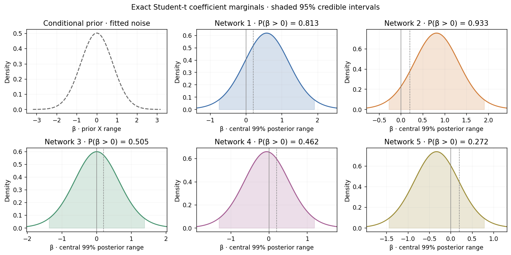
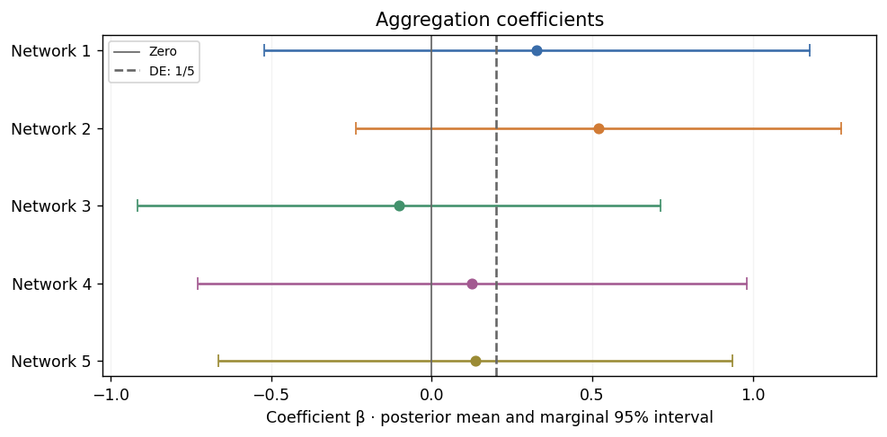
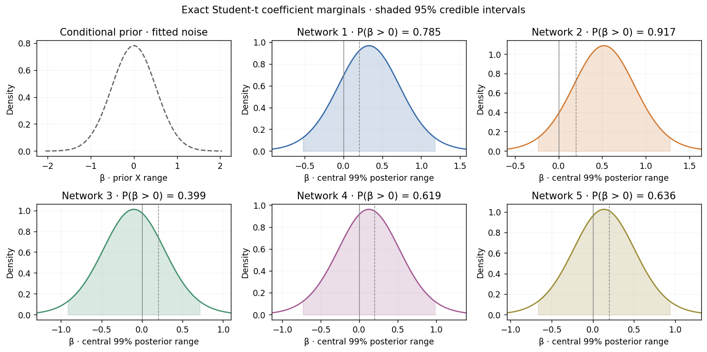
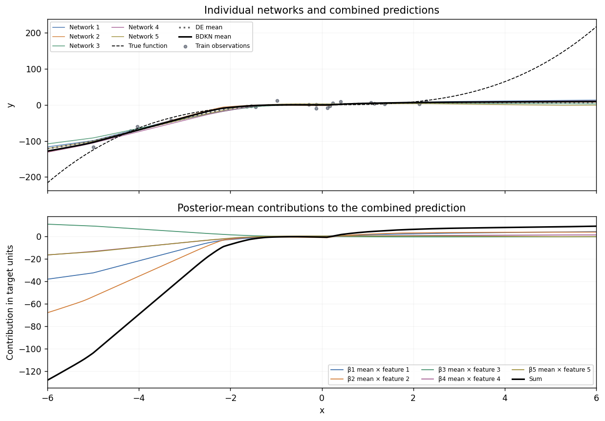
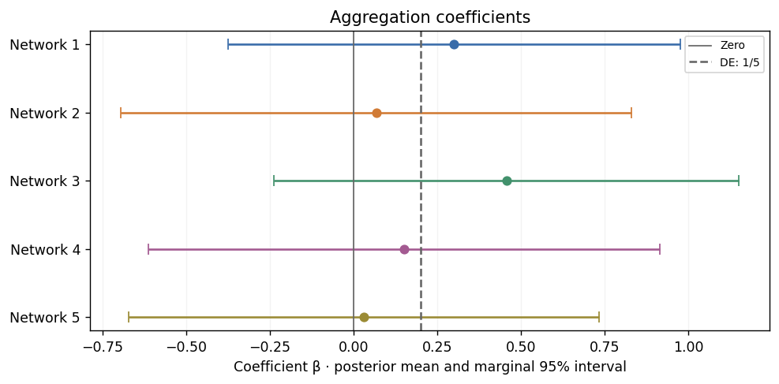
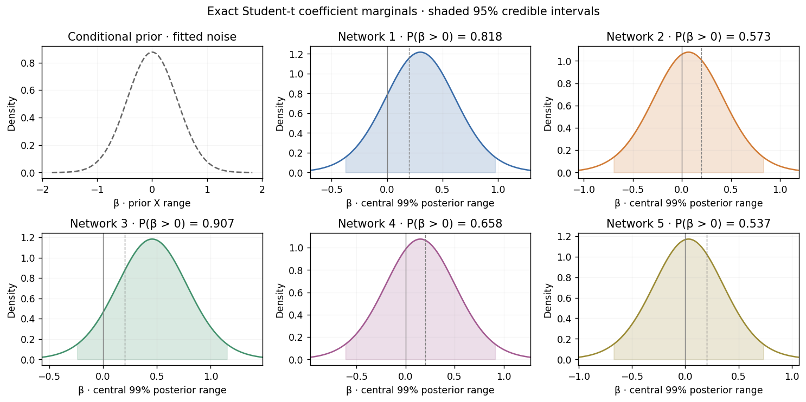
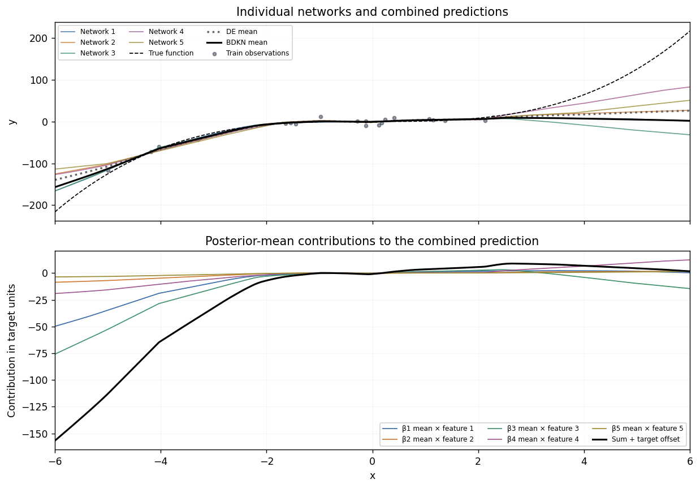
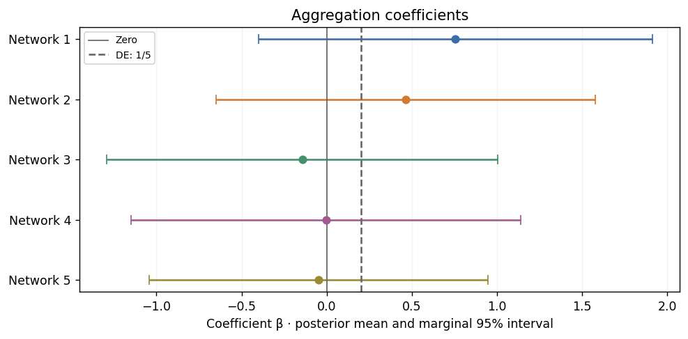
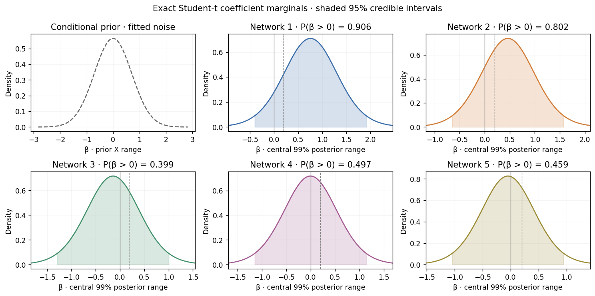
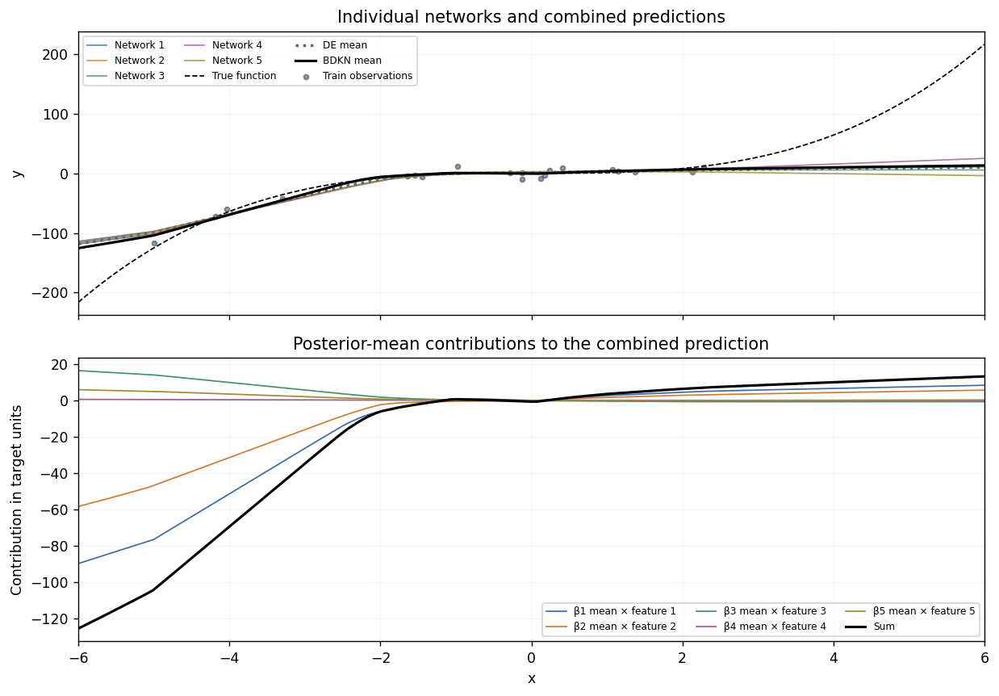

Regression comparison
Download resultsAggregation weights
Coefficients can be negative and need not sum to one. Intervals describe coefficient uncertainty; the dashed reference is DE’s fixed 1/H weight.
BDKN



Each density panel uses its own X range for readability; coefficient intervals above share a common axis. Prior reference conditions on fitted noise. Contribution shares use held-out inputs; test targets are used only for scoring.
| Network | β mean | 95% low | 95% high | P(β > 0) | Contribution share | Test RMSE | Test NLL |
|---|---|---|---|---|---|---|---|
| 1 | 0.57940 | -0.75116 | 1.90995 | 0.81274 | 0.32283 | 58.66186 | 34.93753 |
| 2 | 0.81495 | -0.27511 | 1.90500 | 0.93272 | 0.45401 | 59.02336 | 73.59532 |
| 3 | 0.00756 | -1.36568 | 1.38079 | 0.50452 | 0.00423 | 59.41621 | 34.48789 |
| 4 | -0.05790 | -1.30481 | 1.18901 | 0.46190 | 0.03097 | 61.53888 | 39.27997 |
| 5 | -0.32976 | -1.44246 | 0.78294 | 0.27171 | 0.18796 | 59.14333 | 38.97010 |
Functional repulsion · BDKN



Each density panel uses its own X range for readability; coefficient intervals above share a common axis. Prior reference conditions on fitted noise. Contribution shares use held-out inputs; test targets are used only for scoring.
| Network | β mean | 95% low | 95% high | P(β > 0) | Contribution share | Test RMSE | Test NLL |
|---|---|---|---|---|---|---|---|
| 1 | 0.32724 | -0.52151 | 1.17598 | 0.78465 | 0.27552 | 56.40756 | 34.09740 |
| 2 | 0.52030 | -0.23485 | 1.27546 | 0.91694 | 0.42774 | 57.52475 | 53.67004 |
| 3 | -0.10104 | -0.91427 | 0.71219 | 0.39907 | 0.07631 | 61.00469 | 35.05535 |
| 4 | 0.12584 | -0.72878 | 0.98046 | 0.61905 | 0.11537 | 56.49000 | 35.93687 |
| 5 | 0.13588 | -0.66491 | 0.93668 | 0.63646 | 0.10506 | 61.66105 | 53.23984 |
Weight repulsion · BDKN



Each density panel uses its own X range for readability; coefficient intervals above share a common axis. Prior reference conditions on fitted noise. Contribution shares use held-out inputs; test targets are used only for scoring.
| Network | β mean | 95% low | 95% high | P(β > 0) | Contribution share | Test RMSE | Test NLL |
|---|---|---|---|---|---|---|---|
| 1 | 0.30026 | -0.37502 | 0.97553 | 0.81764 | 0.26524 | 57.03855 | 40.36209 |
| 2 | 0.06832 | -0.69373 | 0.83037 | 0.57323 | 0.06672 | 51.23454 | 34.87149 |
| 3 | 0.45632 | -0.23822 | 1.15086 | 0.90714 | 0.43774 | 68.18710 | 58.17926 |
| 4 | 0.15068 | -0.61235 | 0.91371 | 0.65762 | 0.19672 | 34.80934 | 159186850.35248 |
| 5 | 0.03134 | -0.67063 | 0.73331 | 0.53664 | 0.03358 | 46.29940 | 407308270.20622 |
First-order repulsion · BDKN



Each density panel uses its own X range for readability; coefficient intervals above share a common axis. Prior reference conditions on fitted noise. Contribution shares use held-out inputs; test targets are used only for scoring.
| Network | β mean | 95% low | 95% high | P(β > 0) | Contribution share | Test RMSE | Test NLL |
|---|---|---|---|---|---|---|---|
| 1 | 0.75604 | -0.40135 | 1.91344 | 0.90592 | 0.53355 | 57.14068 | 34.61309 |
| 2 | 0.46334 | -0.64986 | 1.57654 | 0.80221 | 0.33213 | 56.44106 | 32.12105 |
| 3 | -0.14307 | -1.29013 | 1.00400 | 0.39870 | 0.09865 | 59.33233 | 35.44472 |
| 4 | -0.00432 | -1.14839 | 1.13976 | 0.49690 | 0.00340 | 53.23057 | 29.64754 |
| 5 | -0.04934 | -1.04412 | 0.94543 | 0.45931 | 0.03227 | 62.59108 | 47.15382 |